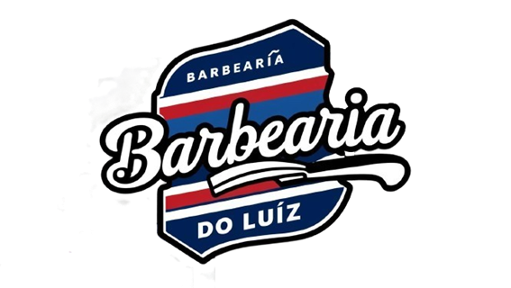

Escolhida: A · Brasão clássico, aplicada no site na branch site-renovado.
Três caminhos para a Barbearia do Luiz, todos em vetor (SVG): ficam nítidos em qualquer tamanho, pesam poucos KB e já vêm com os acentos corrigidos. Cada proposta aparece em fundo escuro, em fundo claro, no cabeçalho do site e como ícone da aba do navegador.

Evolução fiel do logo atual: mesmo brasão azul, mesmas listras e a escrita “Barbearia” com a navalha, só que redesenhados e limpos. No topo, “DESDE 2019” substitui o “BARBEARIA” repetido. É o caminho mais seguro, porque os clientes reconhecem na hora.
Um carimbo vintage, com o poste de barbeiro no centro e o nome em volta. Funciona muito bem em placa, avental, cartão de visita e foto de perfil do Instagram e do WhatsApp, onde a imagem é cortada em círculo.
Ícone do poste ao lado do nome, nas mesmas fontes do site novo. É a versão mais legível no cabeçalho e no celular. O ícone sozinho vira o favicon (o ícone da aba do navegador).